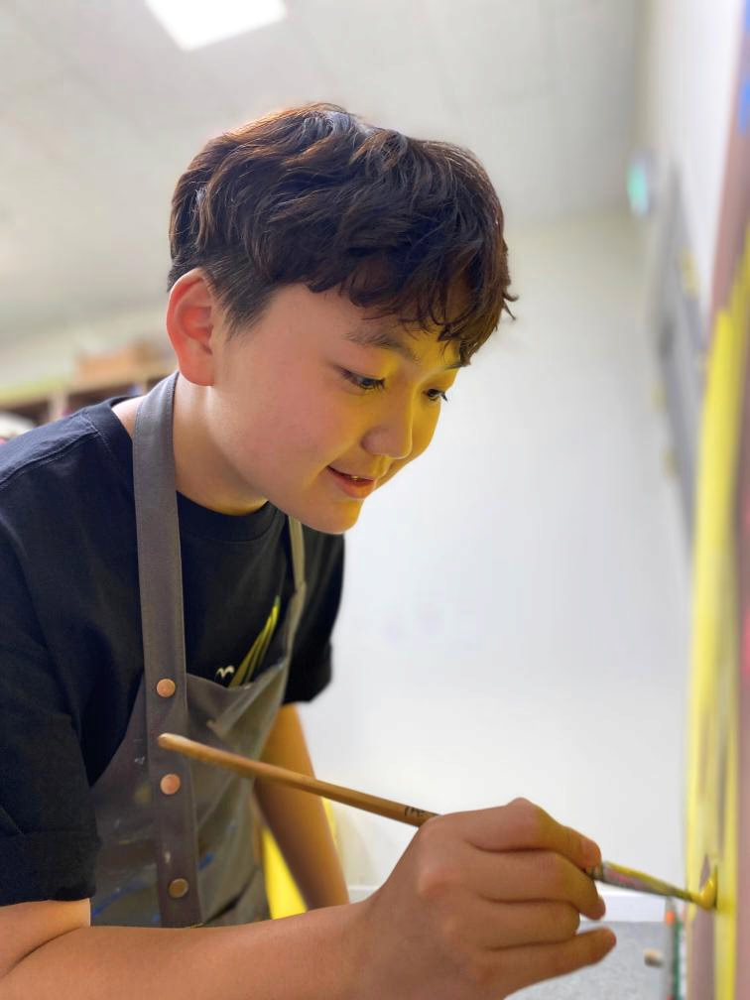
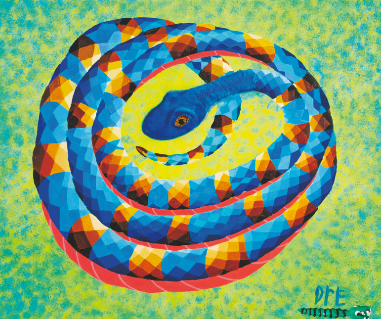

The Flatland Dream — 2025 Exhibition Recap

1. What would you most like to do when summer comes?
I want to go to the sea.
I want to see fish and think about friends under the sea.
I think I will remember the anglerfish again, too.
I also want to feel the cool breeze and think of new ideas for drawings.
2. What is your favorite dish made by your mom?
I like Dad’s kimchi fried rice.
It tastes good when I eat it with egg.
It makes me feel happy when I eat it.
3. Is there a dinosaur you especially like?
I like Brachiosaurus.
It is cool because it has a long neck.
The Brachiosaurus in my drawing likes flowers and hearts, too.
It is even better when it is with friends.
4. Besides making artworks, what hobbies do you enjoy?
I like making LEGO.
I also like watching dinosaur videos.
I like going on trips, too.
I like sleeping at hotels and eating breakfast there in the morning.
I also like taking walks and looking at animals or the sky.
5. Are there any new working styles or materials you are practicing these days?
These days, I use polymer clay a lot.
I make dinosaurs and flowers with polymer clay.
I attach the things I make onto my drawings.
Then it feels like the friends in the drawings come a little more alive.
6. How did you feel when you first saw the collaborative artwork?
When I first saw the anglerfish drawing, I thought it was fascinating.
It felt like being deep under the sea.
It looked a little scary, but when I looked closely, it was cool.
Because they are exhibited together, it felt like there were more friends under the sea.
7. What are your future plans or goals as an artist?
I want to keep drawing.
I want to draw dinosaurs and animal friends.
I also want to draw more friends under the sea.
I hope people feel happy when they see my drawings.
I also want to participate in more exhibitions.

1. 여름이 오면 가장 하고 싶은 일은 무엇인가요?
바다에 가고 싶어요.
물고기도 보고, 바닷속 친구들도 생각하고 싶어요.
아귀도 다시 생각날 것 같아요.
시원한 바람을 맞으면서 새로운 그림 생각도 하고 싶어요.
2. 가장 좋아하는 엄마의 요리는 무엇인가요?
아빠 김치볶음밥이 좋아요.
계란이랑 같이 먹으면 맛있어요.
먹으면 기분이 좋아져요.
3. 특히 좋아하는 공룡이 있다면 알려주세요.
브라키오사우루스를 좋아해요.
목이 길어서 멋있어요.
제 그림 속 브라키오사우루스는 꽃이랑 하트도 좋아해요.
친구들하고 같이 있으면 더 좋아요.
4. 작품 활동 외에 좋아하는 취미가 있다면 무엇인가요?
레고 만드는 거 좋아해요.
공룡 영상 보는 것도 좋아해요.
여행 가는 것도 좋아해요.
호텔에서 자고 아침에 조식 먹는 것도 좋아해요.
산책하면서 동물이나 하늘 보는 것도 좋아해요.
5. 요즘 새롭게 연습하고 있는 작업 스타일이나 재료가 있나요?
요즘은 폴리머 클레이를 많이 써요.
폴리머 클레이로 공룡도 만들고, 꽃도 만들어요.
만든 것들을 그림 위에 붙여요.
그러면 그림 속 친구들이 조금 더 살아나는 것 같아요.
6. 협업 작품을 처음 마주했을 때 어떤 느낌이 들었나요?
아귀 그림을 처음 봤을 때 신기했어요.
깊은 바닷속에 있는 느낌이 들었어요.
조금 무섭게 생겼는데 자세히 보면 멋있었어요.
같이 전시되니까 바닷속 친구들이 많아진 것 같았어요.
7. 앞으로 작가로서 어떤 계획이나 목표가 있나요?
계속 그림 그리고 싶어요.
공룡도 그리고, 동물 친구들도 그리고 싶어요.
바닷속 친구들도 더 그려보고 싶어요.
사람들이 제 그림 보고 행복했으면 좋겠어요.
더 많은 전시도 해보고 싶어요.